Unidad 3
S.O. Multitarea Monousuario
Repaso: Proceso
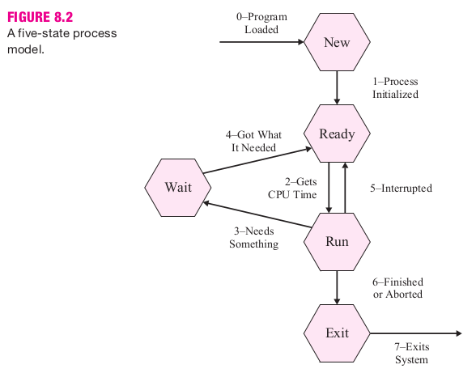- Procesos.
- Estados.
- Transiciones.
Planificación de la CPU
Hasta ahora hemos discutido:
- FCFS.
- Prioridades.
- Garantizada.
- SRTF, SJN.
- HRRN.
Apropiación
Apropiación es la facultad del S.O. de quitarle un recurso a un proceso.
Por ejemplo, la CPU.
- Al agregar apropiación:
- FCFS → Round Robin
- SRTF (R = Runtime) → SRTF (R = Remainig)
- Prioridad → Prioridad Apropiativa
Colas multinivel
Podemos tener una o varias colas de listos.
Cada una con el mismo o diferentes algoritmos.
Pueden tener mecanismos de "retroalimentación".
Ejemplo colas multinivel
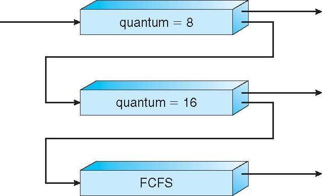Dos colas RR y una FCFS.
Arriba las de mayor prioridad.
Al agotar cuantum cae la prioridad.
Evaluación de Algoritmos
Existen diferentes criterios para evaluar los algoritmos de planificación.
- Producción (throughput)
- Tiempo medio de retorno
- Tiempo medio de respuesta
- Utilización de la CPU
- Tiempo medio de espera
Otras consideraciones
Hay otros aspectos que impactan en la planificación de procesos.
- Planificación a largo plazo.
- Afinidad al procesador.
- Modelo de creación de procesos.
Hilos
¿Qué es un hilo?
Ejecución con Hilos
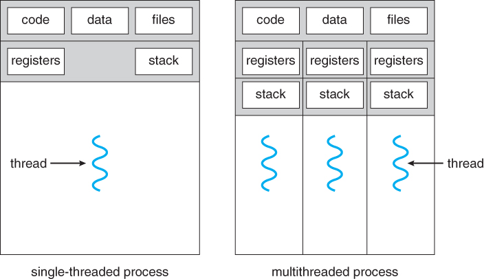Ejecución con y sin Hilos
Ejemplo de Hilos
user@localhost:~$ pstree -t -l -a 21778
oosplash --writer
├─soffice.bin --writer --splash-pipe=5
│ ├─{PipeIPC}
│ ├─{dconf worker}
│ ├─{gdbus}
│ ├─{gmain}
│ └─{rtl_cache_wsupd}
├─{osl_executeProc}
└─{rtl_cache_wsupd}
Hilos de LibreOffice Writer en GNU/Linux
Nivel Usuario / Nivel kernel
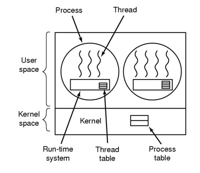 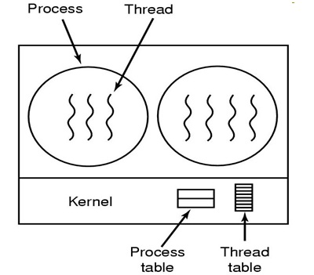Nivel Usuario / Nivel kernel
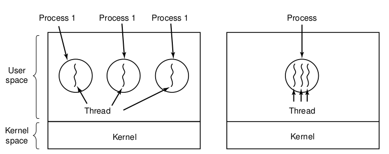Hilos a nivel usuario y kernel
Procesos vs. Hilos
¿Qué tienen en común?
¿En qué difieren?
Ventajas / Desventajas
Gestión de Memoria con Multitarea
Particiones Fijas
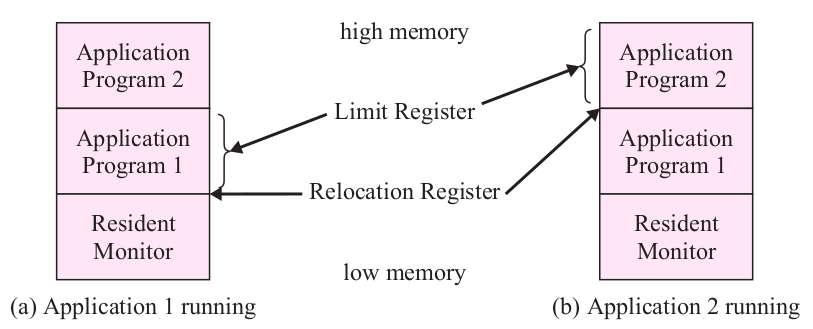Multiples procesos de tamaño fijo
Particiones Fijas
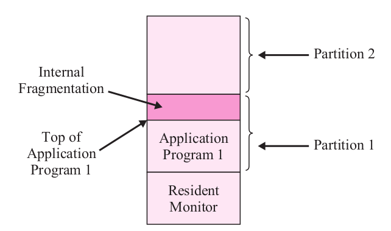Fragmentación interna
Particiones Variables
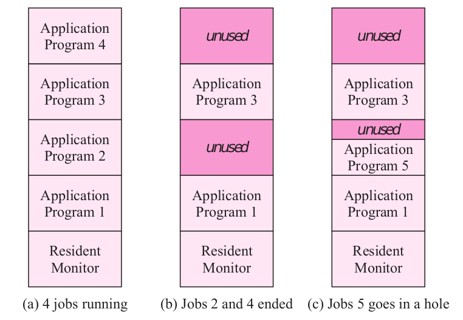Multiples procesos de tamaño variable
Particiones Variables
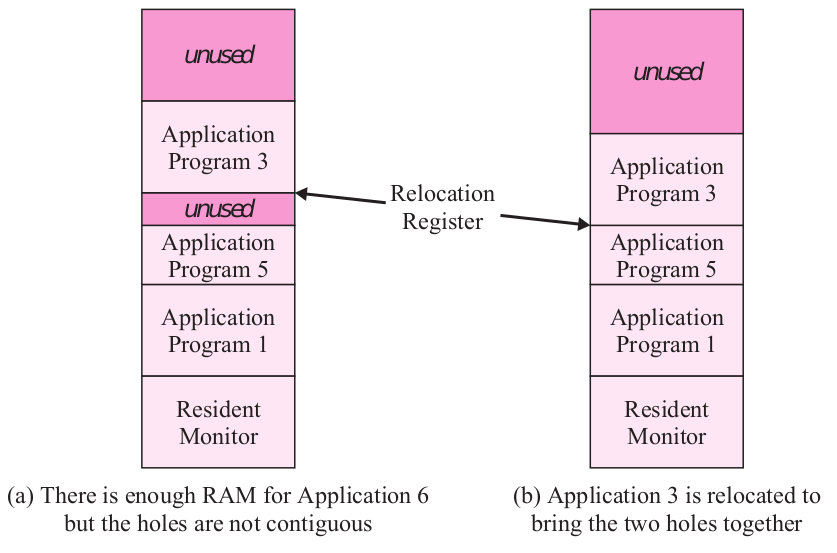Fragmentación externa y compactación.
Carga dinámica
Carga dinámica de partes del programa.
- Overlays
- Librerías de carga dinámica
Paginación
Acceso paginado
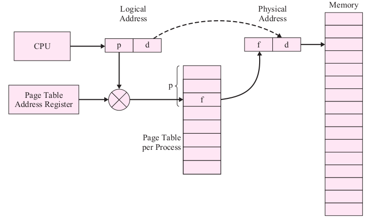Acceso a memoria usando paginación.
Control de Acceso
Optimizaciones
- TLB
- Tablas multinivel
- Tabla invertida
- Múltiples tamaños de página
Acceso con TLB
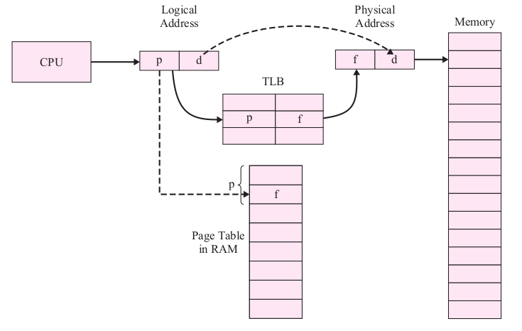Acceso a memoria usando paginación y TLB.
Tabla multinivel
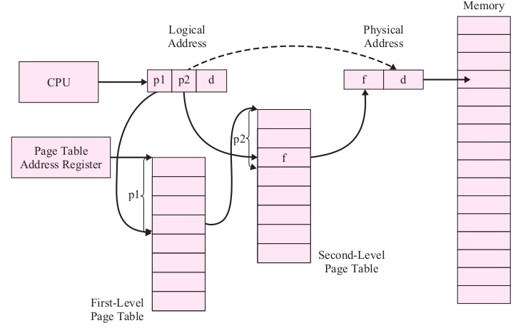Tabla de página multinivel.
Tabla invertida
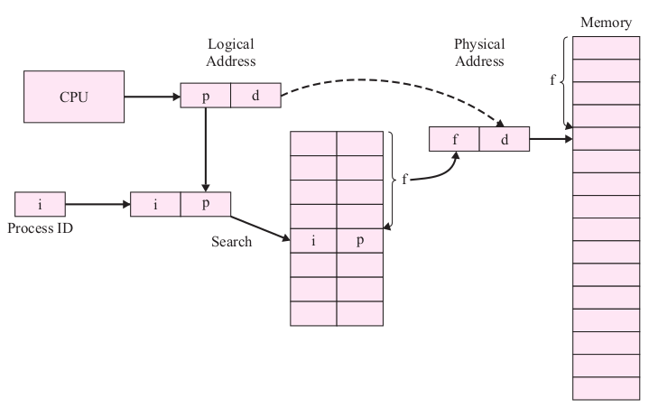Tabla de páginas invertida.
Segmentación
Proceso segmentado
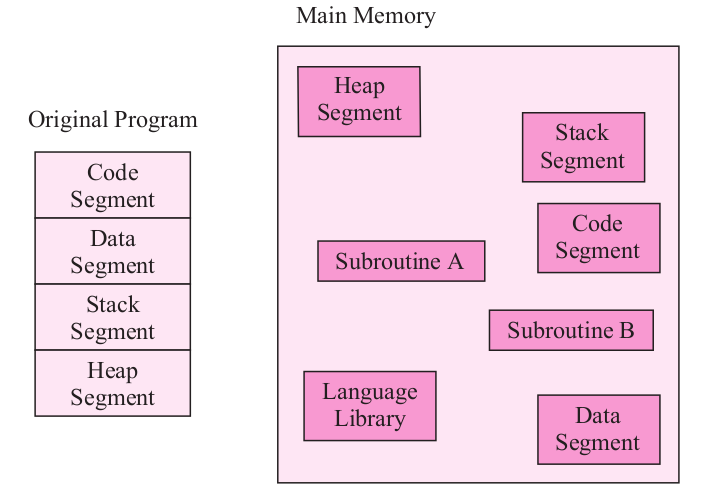Segmentando un proceso.
Acceso segmentado
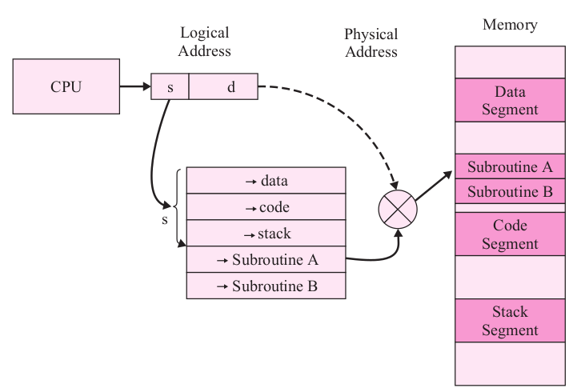Acceso a memoria segmentado.
Segmentación Paginada
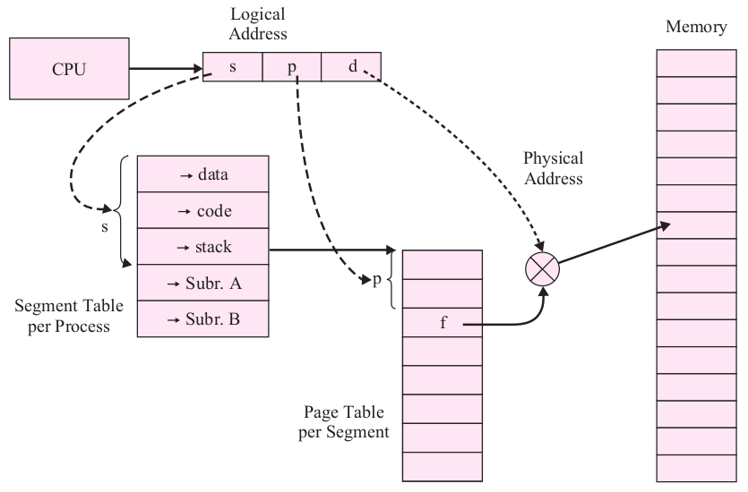Acceso a memoria con segmentación paginada.
Paginación bajo Demanda
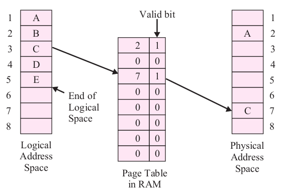Tabla de páginas con páginas no residentes.
Paginación bajo Demanda
Algunas consideraciones:
- Tamaño del conjunto residente
- Estrategia de Reemplazo (local o global)
- Algoritmo de reemplazo
- Páginas "sucias" o "limpias"
- Tasa de fallos de página
Reemplazo de páginas
Algoritmos de reemplazo:
- FIFO
- Óptimo
- LRU
- Del Reloj
- Segunda Oportunidad
Balanceo de Fallos
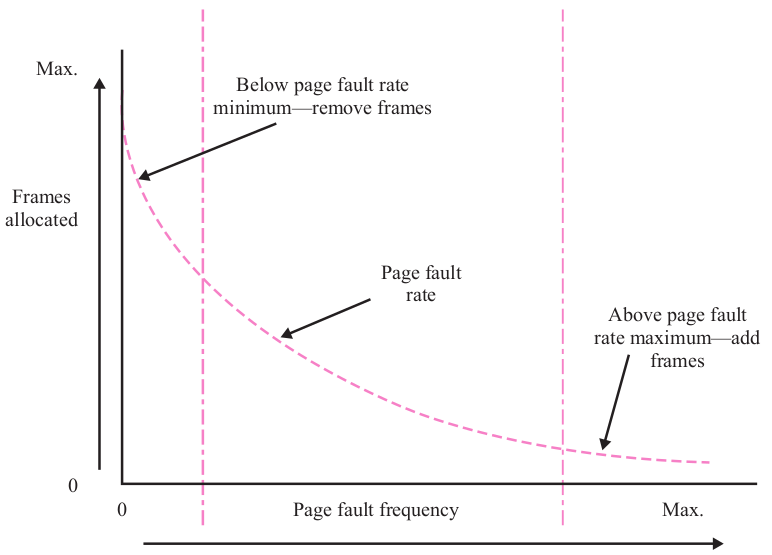Balanceo de la tasa de fallos de página.
Otros funcionalidades
Hay otras funcionalidades necesarias
- Memoria compartida entre procesos
- Archivos mapeados en memoria
Bibliografía
- Elmasri - S.O.: Un enfoque en espiral.
-
- Capítulo 8: Secciones 8.4.6 a 8.6
- Capítulo 10: Secciones 10.4 a 10.6
- Capítulo 11: Secciones 11.1 a 11.6.2